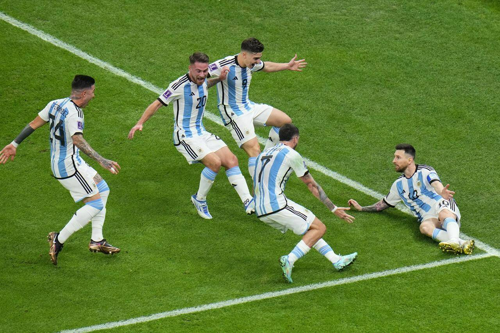

Argentina have lifted the World Cup trophy in Qatar, defeating France 4-2 on penalties after a thrilling 3-3 draw over 120 nerve-shredding minutes. Croatia took third place in the tournament, defeating surprise package Morocco 2-1 in the third-place play-off. Here, you can see the routes those teams took to the final, which took place on 18 December at Lusail Stadium.
After scoring a fifth goal of this World Cup against Croatia, and his 11th overall, Lionel Messi smashed a new string of records for Argentina. The 35-year-old is now the top-scorer for Argentina in World Cups, surpassing the previous record of Gabriel Batistuta (10), joint-sixth in all-time World Cup scorer charts, and the oldest man to score five goals in a single World Cup tournament. The semi-final meeting with Croatia also saw him level Lothar Matthaus' record 25 World Cup appearances by a player before he overtook it in the final. In the tournament's opening stages, Messi became the first player to score in four World Cups for Argentina (2006, 2014, 2018 and 2022) after he netted a penalty in an opening-round loss to Saudi Arabia. In the final, he scored from the spot to become the first man to score in each of the knockout stages since the round of 16 was introduced at Mexico 1986. He scored in extra time to make it seven for the tournament and 13 in World Cups. But more than any of that, he lifted the World Cup for the first time in his glorious career.
Messi collected the Golden Ball award as the best player of the tournament moments before lifting the FIFA World Cup 2022 trophy in Qatar. Kylian Mbappe and Luka Modric were among his challengers.
Lionel Messi has won the Golden Ball award, presented to the best player of the FIFA World Cup 2022 in Qatar. It is the second time the Argentine has claimed the prize, having done so in 2014 in Brazil, but on this occasion he also lifted the World Cup trophy - the greatest prize in men's football - that had eluded him for so long. And it was anything but easy as Argentina squandered a 2-0 lead over France in the final before eventually winning 4-2 on penalties. Messi scored twice in the final, including in extra time, at the end of a thrilling tournament. Morocco, the first African team to reach the World Cup semi-finals, were the surprise name in the final four along with Argentina, Croatia and holders France. We selected one player from each of the teams in the semi-finals as potential candidates for the coveted Golden Ball.